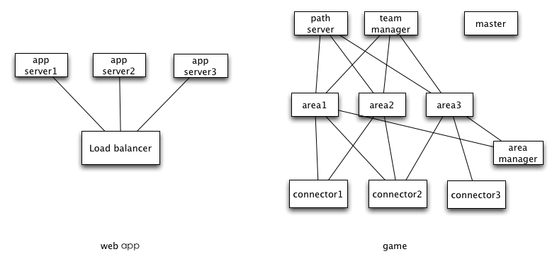

Initially, pomelo was designed for game server, but after completion of the design and development, it was found that pomelo can be a general-purpose distributed real-time application development framework. Here, we will illustrate pomelo's design motivation by analyzing demands of a game server and problems faced when developing it.
What's Game Server
People who have not worked on game server may think game server is very mysterious. But in fact it is not more complicated than the web server, it is nothing but provides services for the network requests from the clients. Essentially, it's just a socket server based on long connection. Of course, it demands more than web server on the aspect of logical complexity, message volume, real-time performance, etc. Now, we will introduce you some features of game server by making a contrast between web server and game server:
Complicated Socket Server
In fact, we can treat a web server as a http server, while we treat a game server as a raw socket server . It is implemented to handle interactions between server-side and client-side by using socket communication. Therefore, there are a lot of game servers implemented based on the native socket (aka TCP) directly. Compared with simple socket server, the game server does more onerous tasks:
- Extremely complicated game logics that the backend servers must handle.
- A huge amount of network traffic, and real-time requirement.
- In general, a single socket server can not stand it, so it tends to use a cluster of servers to provide services.
Long Connection and Real-time
Web application is based on request/response pattern of short connection, so resources held by the web server is much less than game server because game server uses long connection. Thus, maximum scalability can be achieved for web server by using http-based application to handle short connection. The reasons why web server can use short connection are presented as follows:
- One-way communication, typical web application only supports pull mode;
- Low demand on real-time, generally, it can be considered timely if web server can respond within 3 seconds.
But game application can only use long connection for the following reasons :
- Two-way communication, game application should support both pull mode and push mode, and what's more is that the amount of data server pushes is far greater than the data client pulls initially.
- Extremely high demand on real-time, the server should push message to client real-timely, and maximum response time should be less than 100ms.
Partitioning Strategy and Load Balancing
There is no adjacent concept on interaction between web applications in general, the interaction between all users are equal. The interactive frequency is irrelevant to user's geography in web application, but it is opposite in game application. The interactive frequency with other players in the game is closely related to the location (area) of the player. For example, two players who is adjacent to each other can attack each other or make a team to attack monsters. So the interaction between them will be very frequent, and the real-time requirement is very high too. This means it must be required that these two players should be located in the same area server process to reduce cross-process cost. So there will be a partitioning strategy according to area for game application, and that is different from web application as shown below:
A server process can stand one area or multiple areas, so scalability of the game server is limited by area processes. If an area is too busy, out of its capacity, then the whole game server will be blocked and down. Area server is stateful, requests from a particular player must be sent to the same area server. As we know, stateful server brings us many problems, that leads to the area server is not as good as web server on the aspects of high scalablity and high availability. Typically, we had to alleviate these problems by isolating game servers from each others.
Web application's partitioning can be determined based on regular load balancing, while the game application's is based on the area partitioning strategy, which enables players within a same area to run in the same area server process, in order to reduce cross-process cost.
Scalability and Distributed
Whether a web application or game application, scalability is always one of the most important indicators for evaluation. It is also the most difficult problem, which involves the running architecture and various optimization strategies. It is possible to ensure the number of simultaneous online players and response time to them only with a scalable design. The running architecture of traditional game servers uses a single process model where all the logic is handled, and it is available when there are not many players online at the same time. The increasing number of simultaneous online players brings big challenges to scalability of the single process server inevitably. Therefore, distributed and multi-process game server becomes an inevitable choice.
Here is a figure showing the differences between the architectures of web server and game server:

It can be seen that web server can redirect requests to any process only according to load balancer, so its running architecture is relatively simple, and rarely require to be distributed.
But game server uses a spider-net-like architecture, each process has its own responsibility, these processes are intertwined together to complete a task. So game server is a typical distributed architecture.
Difficulties
From the analysis above, we know the game server uses a spider-net-like architecture, and this bring some difficulties to game server development. These difficulties include:
Real-time Guaranteed
For a game server, its real-time tasks include:
Real-time Tick
Typically, game server requires a timed tick to perform timed tasks. In order to achieve real-time behavior, this tick timer may be within 100ms. These tasks include the following logics in general:
- Traverse entities including players, monsters, etc. in an area, and do some operations on them, such as moving , reviving, disappearing.
- Timed producing the monsters in an area as some of them are killed.
- Timed AI logics, such as the monster's attacking , escaping and other logic.
Because the time limitation is 100ms, so these tasks must be executed in far less than 100ms.
Broadcast
Since a player's actions in the game must be notified to other players in the same area real-timely, broadcast is required, making network traffic of game application much higher than that of web application.
Broadcast in the game is expensive. Player's input and output are asymmetrical, for example, a player just makes a little moving, then the server needs to deliver this action to all other players who can see this player in the same area. If there are fewer players inside an area, the number of broadcast messages are not too many, but if the number of players reaches a high level, the number of broadcast messages will increase exponentially. As shown below:

Assuming there are 1000 players in an area, and each one does an action, if server need to notify these actions to every player in the area so that all the players can see each other in the same area, the number of broadcast messages will up to 1,000,000, which is high enough to down anything.
Distributed
Almost in many books, lectures and articles can be seen from this point: distributed development is difficult. Its difficulties includes:
Multi-process(server) Management
The game server usually use multi-process model. As these processes are intertwined with each other, it becomes difficult to manage these processes.
Without a unified abstraction and management of the servers(processes), it is a very complicated task to start theses servers up in development environment, the operations of starting and restarting servers will seriously affect the development efficiency. What's more, heavyweight processes consume a lot of machine resources. A regular machine used for development may not withstand so many processes. It is possible that a developer requires multiple machines, that will bring us inter-process debugging which is difficult as we know.
RPC Invocation
The solution for RPC invocation has existed for many years, but development efficiency is still not improved significantly.
Here, we use the most popular rpc framework thrift as an example to show how to use a rpc framework traditionally. It needs to go through the following steps before writing the invoking code:
- Write a .thrift file
- Generate some source code from .thrift file by using its compiler:
thrift - gen <language> <thrift_filename>
- Use generated source code in application development.
And if interfaces defined change, we need to modify the .thrift file and redo all the steps above. For development environment in which the interfaces are unstable, it will impact on development efficiency heavily if you do rpc in this way. To make development of the RPC be easier, we need a flexible way without writing interface description file and generating stub interfaces.
Distributed Transaction & Asynchronous Operation
Even though we try to put the related logic into one process, distributed transaction is still inevitable. Two-phase commit, asynchronous operation in the development is not an easy task while using an ordinary programming language.
Load Balancing, High Availability
Since game server is stateful, requests from a particular player need to be routed to the same server through a specific routing rule, while we can route requests to the least loaded server for stateless web server. Usually it is easier to make it be high available for stateless servers than stateful servers. For stateful servers, making it be high available will be very difficult to do, but also there are some way to do that, here are two approaches:
- Store states to external storage
For example, we can use redis or something like to store all the players' states, so that the server does not have to hold any states, it becomes stateless. But because all operations may be through redis, that will leads to performance loss. And in some cases, performance loss can be unbearable.
- Server Redundancy
The state of server can be synchronized to another redundant server via logs for a backup, but there may be momentary data loss problems while server switching, such data lost does nothing in some application cases, but it may cause severe data inconsistencies in other application cases.
Stateful high availability is very hard to implement, pomelo v0.5 provides a high availablity mechanism, it introduces zookeeper and redis that can solve the high-availablity problems for some servers(eg master server), but when in actual complex application case logic can only be handled by the application itself.
Issues of Development on Native Socket
In addition to the above, the development on native socket has lots of issues too:
- Low Level Abstraction
Abstraction level of native socket is too low to use, many mechanisms need to be implemented by the developer, such as session, filter, request, broadcast and so on. it is a heavy work and error-prone, and in fact it will do a lot of duplication of effort that every server will do.
- Scalability
Scalability depends on many aspects, including the message density, storage policies, server architecture and other factors. With the native socket to achieve high scalability, developer needs to spend a lot of effort on architecture design.
- Server Monitoring and Management
It is necessary to monitor the state of the servers, such as message density , online player number, machine status, network pressure and so on. It is a big work if you use the native socket to do so.
Framework-based Solution
Yes, we need a framework to simplify the development of game server. Except the game logic itself, most of work can be done by a framework. server abstraction, scalability , extensibility, these problems can be addressed by the framework to avoid duplicate efforts. Also, game server framework can do some work as an application server framework, you can also treat the framework as a container, as long as throwing the code met its specification into the container, then it runs. Meanwhile, the code has the ability of abstraction, scalability, and monitoring & management capabilities naturally that the framework provides.
Existed Game Server Frameworks
There are countless web server frameworks in open source community, so is the game client framework and library, but there is few game server framework. Maybe there are some sporadic libraries, but almost no complete solution. So we had to take some commercial solutions to make a comparsion:
- Sun RedDwarf
RedDwarf is only one that we have found, which is a open source game server framework produced by Sun Inc. Unfortunately, it has been stopped since Sun was merged into Oracle. RedDwarf uses distributed architecture, and it invests too many efforts into distributed data storage and task management, it is so idealistic that it is very complex, for example, its implementation of dynamic task migration is very complex, but it acts a rare role in practical applications. Scalability and performance was not good too, so RedDwarf died.
- SmartfoxServer
SmartfoxServer is produced by gotoAndPlay() from Italy, and it is a commercial game server. It is written in java and looks like a web application server such as Tomcat. Smartfox supports a variety of client platforms, and there are some successful application cases. Its implementation of server abstraction and monitoring & management of servers is perfect. But it behaves not well on scalability, although Smartfox also supports cluster mode, but it is based on jvm memory replication. It doesn't support traditional MMORPG partitioning solution. Smartfox has free version, but it is not open-source-ed. And its free version (limit on number of online users) aims to attract developers to buy its paid version. A paid version (no limit on online users) price has reached $3500.
- BigWorld
Bigworld is produced by Bigworld Technology from Australia. It is a full 3D MMORPG game development solution, including client side and server side. Bigworld is very powerful, it does a lot of work on dynamic load balancing and fault tolerance. Scalability is also very powerful. Its disadvantage is too heavyweight and the price is very expensive. Bigworld is designed for large 3D MMORPG game, but it is not suitable to small and medium sized game development.
Pomelo Solution
With situation of market of current game server framework that there is no suitable framework for small and medium game development, we launched the pomelo framework, which is an open source framework using the MIT open source license based on node.js. It aims to provide a high-performance , scalable, lightweight game server framework. Actually, it solves the difficulties in game server development and makes game server development more easier. Comparing to other similar frameworks, its main advantages are shown as follows:
- Development on pomelo is rapid and approachable based on the principle of convention over configuration, that makes the code to be simplifed.
- High scalability and extensibility the framework architecture provides makes it be very convenient to scale and extend the applications.
- Lightweight, although pomelo has a distributed architecture, it can start very quickly with little resource requiring.
- Comprehensive reference, pomelo provides not only complete documentation, but also a complete MMO demo (client uses HTML5), which can serve as a powerful reference to developer.
Why Node.js
After talking about so many difficulties in distributed development, it is well-reasoned to introduce node.js. it can solve many difficulties in distributed development because of its native asynchronous programming model:
- Native Distribution
The reason why node.js was called node is that it supports multi-process development model natively, and multiple nodes(processes) communicate and intertwine with each other can be a distributed system. Its programming mode is asynchronous, two-phase commit for transaction, asynchronous operation and other works that seems complex are supported natively in node.js.
- Single-threaded Application Model
Single-threaded application model node.js provides is powerful than other languages, and it is most simplest to handle the game logic using single-threaded model with avoiding the deadlock and lock race, and it is not error-prone.
- Network IO & Scalability
Game servers are IO-intensive applications, so node.js is the most suitable as it uses an event-driven, non-blocking IO model. Node.js introduces high level abstraction for network programming that makes it easy to do network programming. Meanwhile, it is easy to build a scalable application using node.js.
- Language Advantage
Javascript is becoming an important language now, Developing in Javascript can obtain rapid iteration. Its simplicity and lightweight can increase development efficiency. Also, Sharing source code between server-side and client-side comes to be possible for some kind of the client platforms, such as html5 or unity3d which supports javascript for client development. In addition, dynamic typing javascript provides can bring a lot of convenience for framework design, such as design of DSL and implementing convention over configuration. Although it is somewhat not better than Ruby, it is good enough to use in the pomelo framework.
From Game to Real-time Applications
After finising the analysis of design goals of pomelo, we find that the core framework is not specific to game server but a general real-time application framework. The demo chat provided is a real-time application. Indeed, pomelo has been used in many non-gaming field. The message push server produced by Netease is developed based on pomelo, which supports the message pushing to mobile clients and web clients for some Apps produced by Netease, and now it has been on-line.
Summary
In this section, we have analyzed the characteristics of game server first, and conclude it is more difficult to develope a game server than web server because of its complexity. We present deficiencies of some existed game server framework and explain how pomelo to solve it. We also introduce design motivation and goals of pomelo simply. The Next is pomelo framework overview.